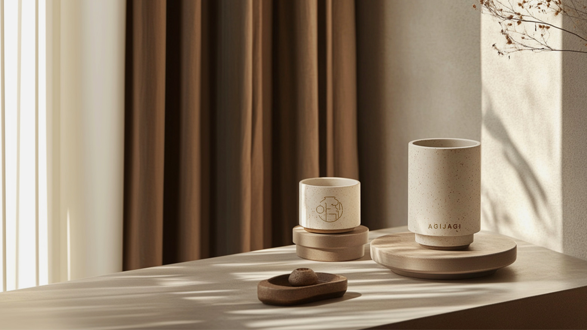
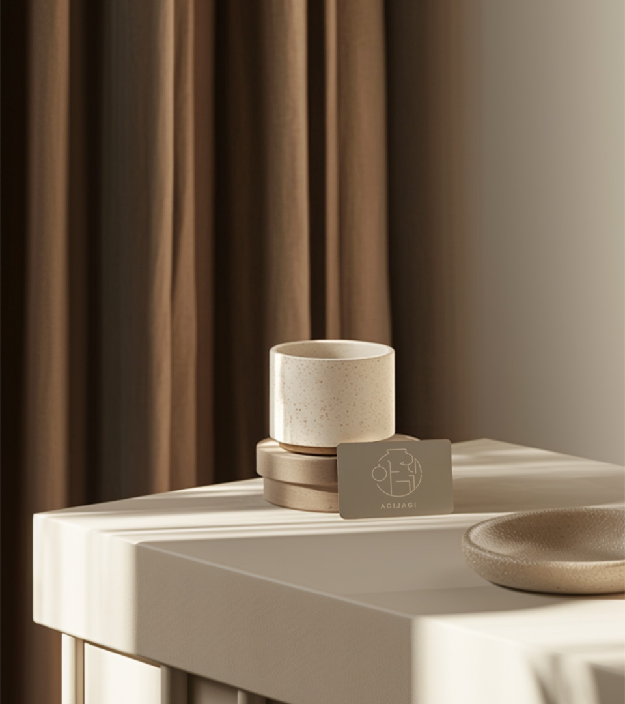
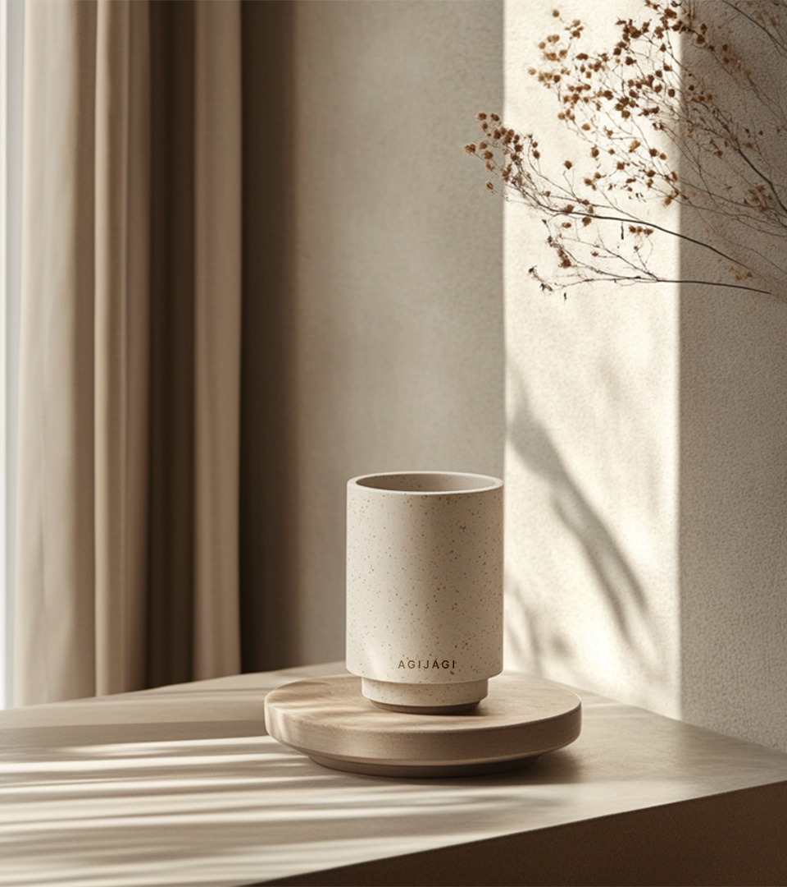
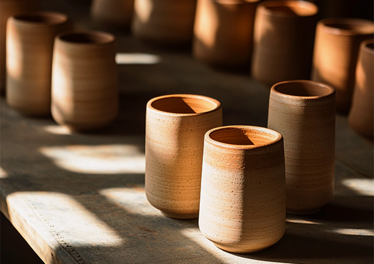
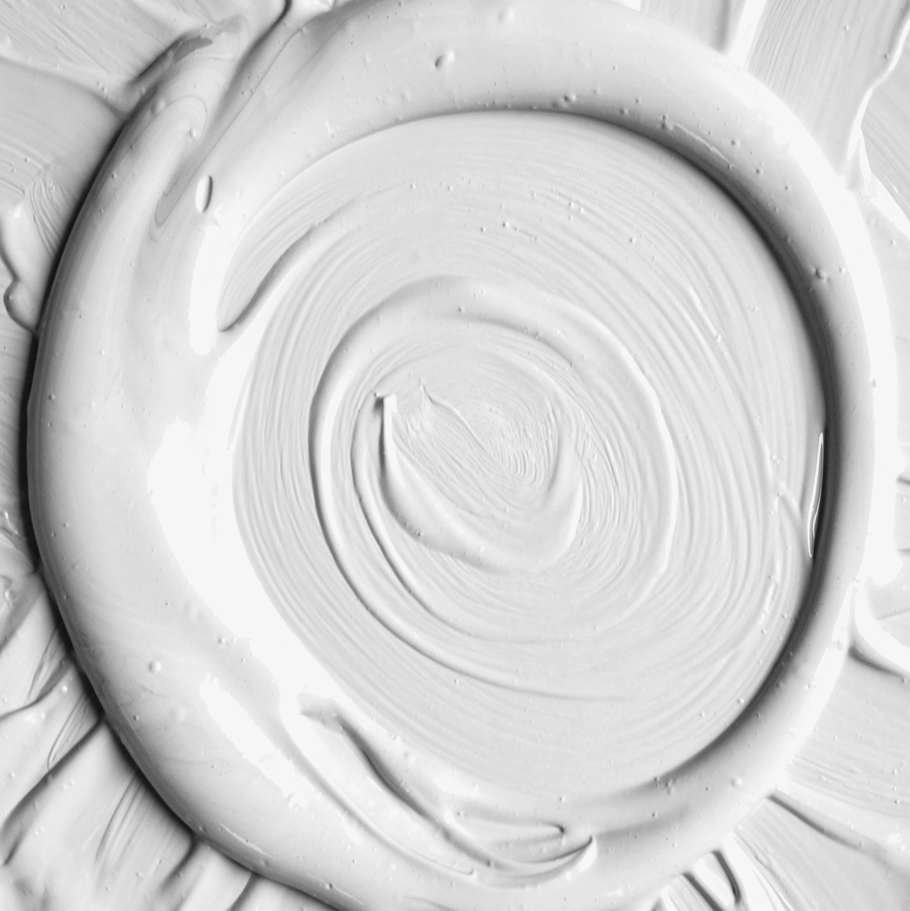
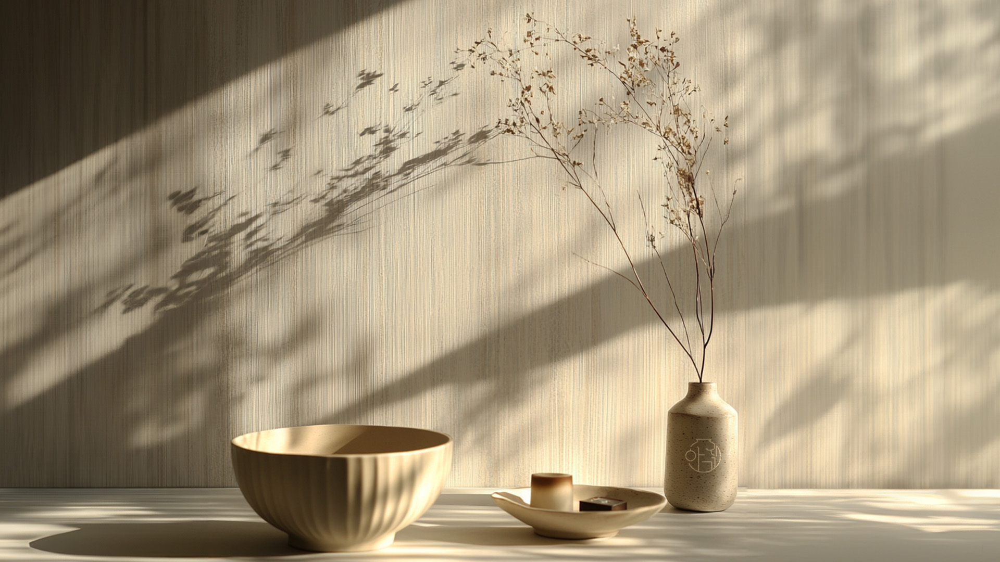
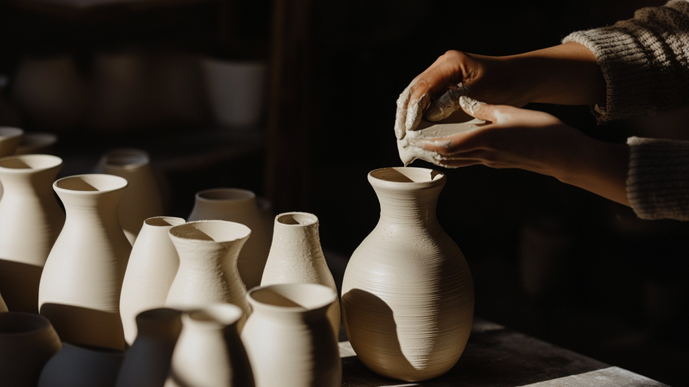

감각적이고 실용적인 도자기
다양한 공간에서 활용 가능한 도자기의 새로운 가능성제시를 통해 기존의 틀을 넘어선도자기 문화를 만들어 갑니다.
아기자기한 매력과 혁신적인 아이디어로 도자기 문화를 선도하며 일상 속 다양한 공간에서
빛을 발하는 제품을 선보이고 있습니다.

아기:자기(瓷器)
‘아기자기’라는 브랜드 이름이 담긴 글씨는
도자기에 정교하게 배치되어 인테리어 포인트가 됩니다. 섬세한 디자인으로 공간에 따뜻함과 세련미를 더합니다. 브랜드 이름처럼 작고 아기자기한 도자기 제품들은
집안 어느 곳에 놓아도 자연스럽게 어울려 생활에 조화를 더하는 것을 목표로 합니다.
도자기에 정교하게 배치되어 인테리어 포인트가 됩니다. 섬세한 디자인으로 공간에 따뜻함과 세련미를 더합니다. 브랜드 이름처럼 작고 아기자기한 도자기 제품들은
집안 어느 곳에 놓아도 자연스럽게 어울려 생활에 조화를 더하는 것을 목표로 합니다.
아기자기:철학(哲學)
아기자기는 한국의 전통 도예 문화를 현대적으로 재해석하여
실용성과 예술성을 겸비한 도자기를 선보이는 브랜드입니다. 아기자기는 '불완전함 속의 아름다움'과 '지속 가능한 가치'를 핵심 철학으로 삼아
도자기 제작 과정에서 환경 친화적 접근과 업사이클링을 실천하고 있습니다.
실용성과 예술성을 겸비한 도자기를 선보이는 브랜드입니다. 아기자기는 '불완전함 속의 아름다움'과 '지속 가능한 가치'를 핵심 철학으로 삼아
도자기 제작 과정에서 환경 친화적 접근과 업사이클링을 실천하고 있습니다.
Philosophy


아기자기:탄생(誕生)
아기자기는 도자기의 고장인 경기도 이천에서 탄생하게
됩니다.
이천의 흙은 철분 함량이 낮고 입자가 매우 미세하여,
도자기 제작에 필요한 적절한 강도와 유연성을 제공합니다. 또한, 이천의 물은 불순물이 적고 pH가 안정적이어서 흙과 혼합될 때
순도 높은 결과물을 만들어냅니다. 이처럼 흙과 물의 완벽한 조화는 이천 도자기의 뛰어난 품질을 뒷받침하며,
아기자기의 섬세하고 아름다운 완성도를 이루는 데 중요한 역할을 합니다.
도자기 제작에 필요한 적절한 강도와 유연성을 제공합니다. 또한, 이천의 물은 불순물이 적고 pH가 안정적이어서 흙과 혼합될 때
순도 높은 결과물을 만들어냅니다. 이처럼 흙과 물의 완벽한 조화는 이천 도자기의 뛰어난 품질을 뒷받침하며,
아기자기의 섬세하고 아름다운 완성도를 이루는 데 중요한 역할을 합니다.
Inception

장인정신
아기자기는 이천 도자기 장인 정신의 깊은 품격과 전통이 깃들어 있습니다.정성과 세심함으로 완성된 도자기는 공간에 특별한 가치를 더합니다.

고품질 백자토
아기자기는 불순물이 거의 없는 고품질 백자토를 사용합니다.순수한 재료가 선사하는 우아한 색감과 견고함으로
오랜 시간 함께할 가치를 제공합니다.
Property


Agijagi Your Space
Agijagi Your Vibes
Agijagi Your Day
Environment
환경친화적 가치
천연 흙으로 빚어진 도자기는환경에 부담을 덜어줍니다.
Tradition
전통 문화적 가치
전통 도자기의 고유한 미를현대 디자인에 고스란히 담아냅니다.
Art
예술적 가치
불완전 속에서 아름다움을 발견해예술적 가치를 재해석합니다.